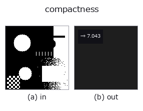

features op• 資料種類:region → feature
• 呼叫:fullseye.apply(img, "compactness", a=0.5, b=0.5)(2-D 的模型是一張圖 + 兩個純量旋鈕 a,b∈[0,1])
• HALCON 對應:compactness(其含義與參數可參考 HALCON 手冊)
• GPU:僅在鏈中(lbl_compactness)。相鄰階段也在 GPU 上的管線中,資料留在 GPU 上執行。單獨呼叫即使 device="cuda" 也在 CPU 上執行(實測:單獨執行贏不了 CPU)

*圖為在 128×128 合成輸入上實際執行的輸出。左為輸入，右為輸出。點雲以俯視散點顯示(亮度 = z)，一維序列為折線，體資料為沿 z 的最大值投影，影片為中間影格，複數影像為振幅；無法成像的回傳值直接顯示數值。*
*旋鈕 a 不改變輸出(實測: 0.1 / 0.5 / 0.9 相同)。*
*旋鈕 b 不改變輸出(實測: 0.1 / 0.5 / 0.9 相同)。*
階段(前置運算子 → 本運算子，由左至右):
▸ compactness: 處理階段 (文件網站)
緊湊度 max(1, 周長² / (4π・面積))。圓為 1，越細長/越粗糙/孔洞越多就越大，沒有上限。與 HALCON 的 compactness（Shape factor for the compactness of a region.）是同一個量。
> 以下的詳細說明為原文 —— 摘要與標題已翻譯。
周囲長の規約(この op は太字の行を使う)。 絶対値は境界の推定量に載る。
| 推定量 | 円 r=96 / 真値 | 正方形 128 / 真値 | この op |
|---|---:|---:|---|
| skimage.measure.perimeter | 1.0518 | 0.9922 | 使用する |
| skimage.measure.perimeter_crofton | 1.0016 | 0.9459 | 使用しない |
したがって曲線では前者の偏りが解像度を上げても +5.18 % まで残り、Crofton へ替えれば円には寄るが軸平行の正方形で -5.41 % になる。推定量を替えても数値は互換ではない。docs/KNOWN_ISSUES.md §50。
★2026-09-26 まで /10 して min(1.0, ...) で切っていた —— 値を [0,1] に収めるための便宜だったが、周囲長²/(4π・面積) が 10 を超える形(幅 2 px なら長さ 80 以上の傷)を全部 1.0 に潰していた。傷や割れという、いちばん見たい領域で「形が違うのに同じ数」が返っていたことになる。値域 [0,1] はそもそも feature の契約ではない(elliptic_axis は 6.35、r3_region_features は 18.1 を返す)ので、潰す理由が無かった —— docs/hardening/compactness-saturated-at-one.md。
HALCON と同じく max(1, C) と下で切る(画素近似で 1 を下回りうるため。HALCON 23.11 の compactness の説明: 「C = max(1, C′)」「The value of C is clipped to 1.0」、返り値の表明 Compactness >= 1.0 || Compactness == 0)。半径 3〜6 の円板は 1.0 になる。領域が空なら 0。
★2026-11-05(敵対的検証 第 2 巡 P2)まで、この説明は「ここでは切らない」と書いていた —— 実装は 2026-09-26 から HALCON の max(1, C) で、説明文だけがその前の方針のまま残っていた。
a, b は未使用。
• 範例資料目錄(下載 URL / 授權) —— 2-D 用 skimage.data(BSD/公有領域)加合成圖,3-D 給出真實資料源(Stanford/PDS 等)的下載 URL。
• 運算子來歷與參考文獻 —— 該運算子族所依據的研究/方法出處。
• 演算法的正典(作者、年份)與用途見上面的族使用指南。
下面的程式已確認可以執行(與圖相同的輸入)。在 Studio 說明中，此區塊會變成按鈕，可當場載入並執行。
threshold 0.50 0.50 compactness 0.50 0.50
• gallery2d_features — py -3.11 examples/gallery2d_features.py
• shape_factors_closed_form — py -3.11 examples/shape_factors_closed_form.py
feature 作為輸入)features)effective_bit_depth · blob_count · area_frac · count_contours · total_length · vol_count · sk_euler · sk_entropy_feat
*Provenance: ops.py — 2D 運算子登記表。本條目由 tools/opdocs.py md 自動產生(請勿手動編輯)。*
© 2026 Kazufumi Furuse — Fullseye operator documentation. Licensed under Apache-2.0.